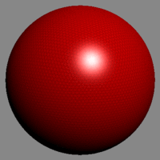
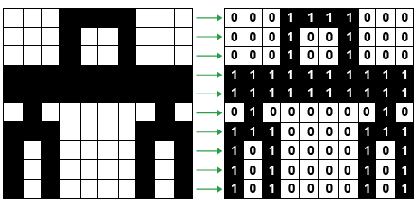
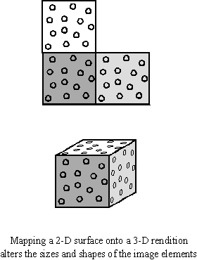

| Tecnica 3D | Descripcion | Imagen |
|---|---|---|
| Shading (Sombreado) | implica la simulación de computadora (o más exactamente; el cálculo) como las caras de un polígono se comportarán cuando es iluminado por una fuente de la luz virtual. El cálculo exacto varía según no sólo que datos están disponibles sobre la cara sombreada, sino también la técnica de sombreado. |  |
| Rastering (Rasterizacion) | es una estructura o fichero de datos que representa una rejilla rectangular de píxeles o puntos de color, denominada matriz, que se puede visualizar en un monitor, papel u otro dispositivo de representación. |  |
| Texturing (Texturizado) | Las superficies polígonales (secuencia de caras) pueden contener datos correspondiente de más de un color, pero en el software más avanzado, pueden ser una lona virtual para una imagen, u otra imagen rasterizada. Tal imagen es colocada en una cara, o la serie de caras y es llamada Textura. |  |